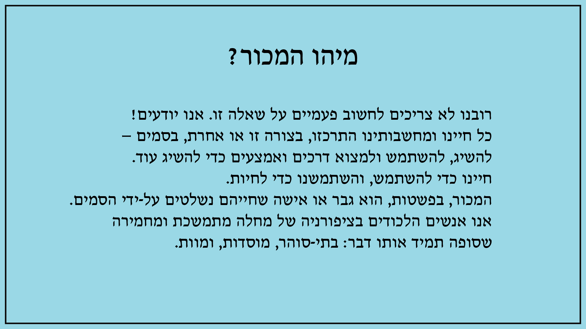
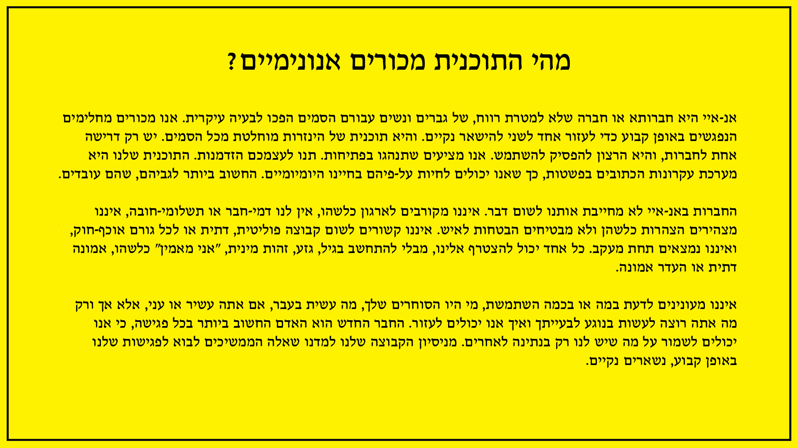
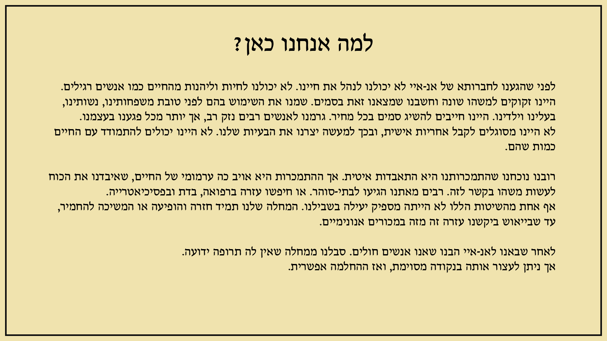
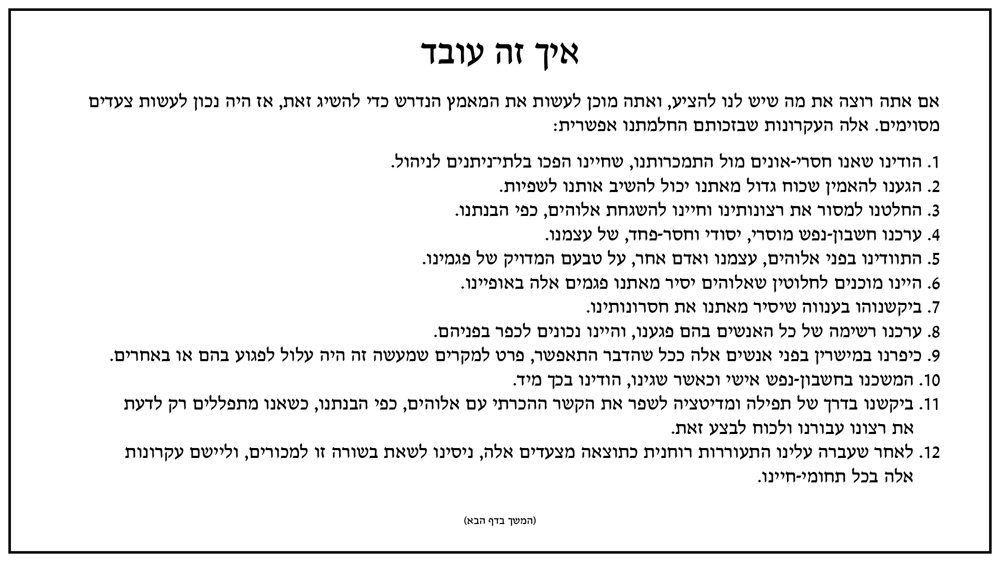
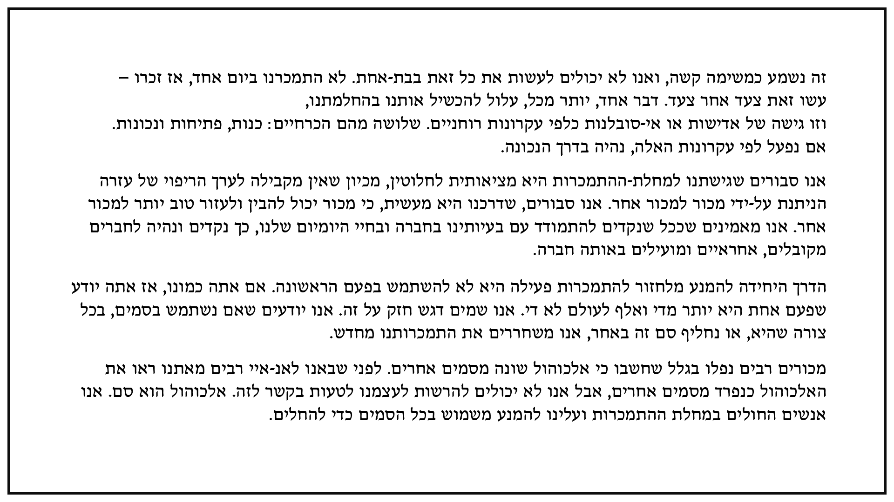
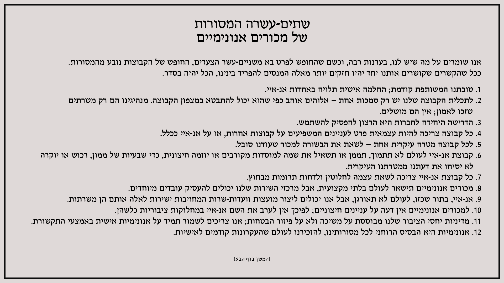
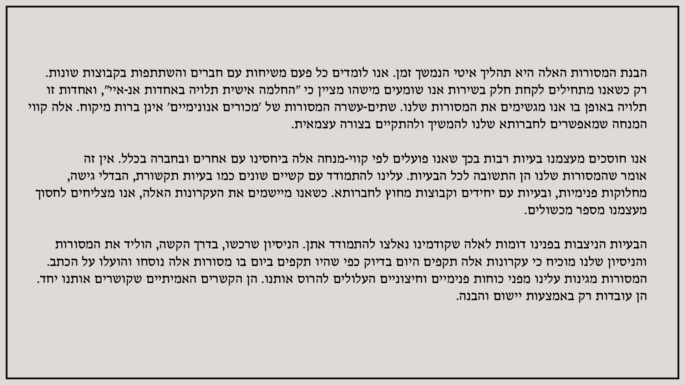
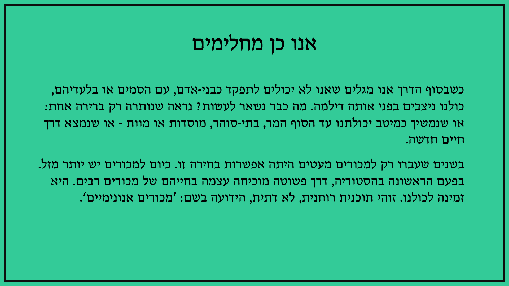
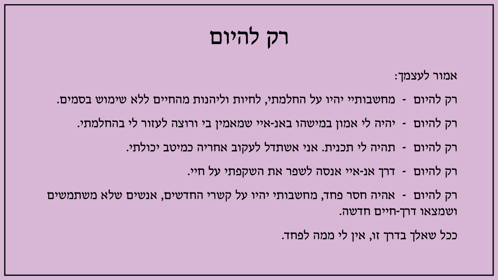

פורמטים וקטעי קריאה לפגישות
שבעת קטעי הקריאה מתוך מצגת הקבוצה, לפתיחה ולהדפסה.
בחרו קטע קריאה לפתיחה. הקריאות מובאות כפי שהן במצגת הקבוצה, כולל עמודי ההמשך. ניתן להגדיל ולהדפיס כל קטע בנפרד.
מיהו המכור?

מהי התוכנית מכורים אנונימיים?

למה אנחנו כאן?

איך זה עובד?


שתים־עשרה המסורות של מכורים אנונימיים


אנו כן מחלימים

רק להיום

מקור הקריאות: מצגת „פורמטים של חמישי ערב”. הטקסטים מתוך ספרות מכורים אנונימיים. לקטעי הקריאה ולספרות באתר NA ישראל.